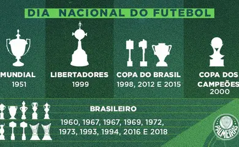
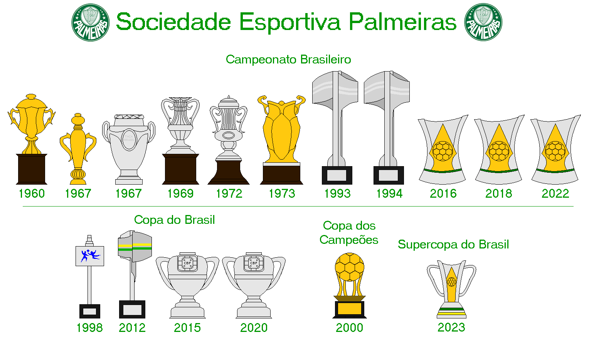

Seus títulos mais importantes conquistados no futebol são as Copas Libertadores da América de 1999, 2020 e de 2021,e a Copa Rio (internacional) de 1951, considerado na época como um Mundial de Clubes de futebol e reconhecido como tal pela FIFA, por meio do presidente da entidade, Joseph Blatter, em agosto de 2014, sendo uma decisão do Comitê Executivo da FIFA de 7 de junho e por meio de documento encaminhado ao Ministério do Esporte do Brasil em novembro do mesmo ano. A entidade, no entanto, não reconhece a competição como um torneio FIFA e reforçou este posicionamento em outubro de 2017, quando reconheceu os vencedores da Copa Intercontinental como campeões mundiais, sem, também, promover a unificação da Copa Intercontinental com a sua atual competição.No âmbito internacional, o clube também conquistou a Copa Mercosul de 1998 e a Recopa Sul-Americana de 2022.
 